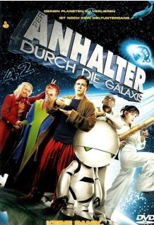
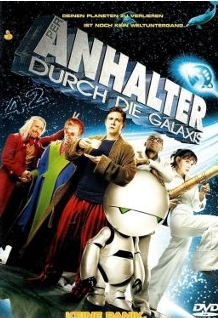

Kunst ist subjektiv. Sie kann alles und/ oder nichts sein. Jede Tätigkeit und jedes Werk kann Kunst sein. Kunst kann vollkommen und nicht einmal angefangen und trotzdem von unschätzbarem Wert sein. Kunst ist, so erinnere ich mich gelesen zu haben, das Zusammenwirken von Inhalt und Form. Doch was ist mit Kunst, wie sie im „No Show Museum“ ausgestellt wird? Der Deutschlandfunk berichtete im April 2020 über dieses Projekt des Schweizer Künstlers und Kurators Andreas Heusser, welches rund 500 Werke umfasst, in denen es hauptsächlich um nichts geht, bspw. leere Räume. Dort hat nichts mehr einen wirklichen Inhalt, geschweige denn eine Form. Kunst erfordert, soweit ich weiß, nur noch zwei wesentliche Aspekte: die Kunst selbst und die Interpretation/die Gedanken der damit Hantierenden. Doch auch das ist noch keine vollständige Definition. Und in all den Jahren, in denen Leben auf unserem Planeten existiert hat, 3,5 Milliarden Jahre seit dem Leben im allgemeinen, 200.000 Jahre seit der Geburt des ersten „intelligenten“ Lebewesens, dem Menschen, in all dieser Zeit vermochte es niemand, den Begriff der Kunst klar und eineindeutig zu definieren.
Du bist Kunst, ich bin Kunst, ich bin vielleicht mehr Kunst als du und diese Aussage ist „aufgrund ihrer einzigartigen Gesellschaftskritik, welche den [eingepreisten], anti-schöpferischen Normen unserer Generalitäten der modernen Welt auf höchster Ebene vor die Füße spuckt“, ebenfalls Kunst. Alles kann Kunst sein, doch es kann nicht sein, dass alles Kunst ist, denn dann sticht nichts mehr hervor es sei denn, das Alles ist das Kunstwerk.
„Es gibt keinen Grund zu glauben, dass es Kunst gibt“ so las man zuletzt auf einem Werbeplakat, welches, weiß ich nicht mehr. Was ich doch weiß: dieser Aussage gilt es entgegenzutreten, denn es gibt durchaus Grund zu glauben: Seit Zehntausenden von Jahren (Altsteinzeit) schafft der Mensch Kunst. Dabei handelt es sich um keine an einen Zweck gebundene Tätigkeit. Im Gegenteil, im Schaffungsprozess verbraucht man Zeit und meistens Materialien, das Publikmachen kann einen teuer zu stehen kommen. Doch Kunst verfolgt anderen Sinn, als nach unseren Kriterien logisch und zweckerfüllend zu sein. Sie kann schön sein, bildend wirken, kritisieren, angewandt dienen (also bspw. in Form von Werbung) und Gedanken des Künstlers darstellen, die man nicht hätte in Worte fassen können und vieles, vieles viieeeeles vieles mehr. Ein Thread in dem Online-Forum Quora bietet hier eine Sammlung von Sinnen und Zwecken; er ist unter dem Titel „Was ist der Zweck von Kunst?” oder beigefügtem QR-Code zu finden.
nachträgliche Anmerkung: beigefügter QR-Code führt zu falschem Quora-Beitrag. Ein Fehler der Gestaltung.
Aber zurück zu dem Grund, an Kunst zu glauben: Unter Glauben versteht man laut Wikipedia „ein Für Wahr halten ohne methodische Begründung“. Der Glaube an die Kunst an sich kann nur selten eine solche methodische Begründung vorweisen, lässt sich aber in einem größeren Blickwinkel trotzdem erkennen: ein Kunstwerk an sich, ohne Meinung und Aussage, lässt sich nur sehr schlecht erkennen, gibt man dem Ganzen aber einen Kontext oder auf die Kunst im Allgemeinen bezogen einen sich über große zeitliche und räumliche Distanzen erstreckende gesellschaftliche Interaktion, so gewinnt selbst der Unkreativste an Verständnis für sie. Heißt in Kurzform: über Jahrtausende haben Menschen verschiedenster (zeitlicher & räumlicher) Herkunft Kunst wertgeschätzt, was ein System auf gesellschaftlicher Ebene darstellt; und ein System stellt einen logischen Grund dar.Grundsätzlich ergeben sich zur Kunst zwei Fragen: Was ist Kunst und was ist keine Kunst? Die Antwort ist einfach: 42. Warum? Douglas Adams, der Autor des berühmten Werkes „Per Anhalter durch die Galaxis“ erklärte auf die Frage, warum denn nun diese Zahl, dass er an seinem Schreibtisch saß, in den Garten starrte und sich dachte „42 - das passt!“. Damit folgt die Auswahl dieser Zahl zwar keiner logischen Erklärung, ist aber auch nicht rein zufällig. Die Zahl entstand aufgrund seiner gerade aktiven neuronalen Verbindungen, sie entstand subjektiv. Und genau so ist auch die Kunst. Kunst ist subjektiv. Sie folgt keinen logischen Grenzen, ist aber auch nicht rein zufällig. Selbst ein Künstler aleatorischer Verfahren, dem gezielten Einsetzen des Prinzips Zufall, entscheidet sich in den meisten Fällen für bestimmte Materialien und Techniken. Und trotz dieser scheinbar grenzenlosen Begrifflichkeiten entscheiden wir als Betrachter stets, ob etwas Kunst ist oder nicht. Wenn man seine Meinung nicht kunstkritikerüblich begründet fällt, kann diese meist auch von der aktuellen Stimmung, dem Frühstück und dem zuletzt gehörten Song im Radio abhängig sein. Jemand, der gerade seine Bahn verpasst hat, zu Fuß dem Gewitter trotzen muss und dann auch noch enttäuscht in eine leere Kaffeebüchse schaut, der wird Caspar David Friedrichs neuem Regenbogen sicherlich nicht mit offenen Armen entgegen stürmen.
Doch wenn man weiß, dass man womöglich soeben von seinem Frühstück korrumpiert wurde und keine mit Sicherheit beständige, fachliche Meinung gegenüber der Kunst entwickeln kann: Was nützt die eigene Meinung dann noch? Das Ganze wäre vergleichbar mit einem Thermometer, das je nach Einstrahlung der Sonne seine Skala ändert. Hier kommt nun die besondere Eigenart der Kunst ins Spiel: Kunst verfolgt ja, die Fälle der Werbeindustrie nun mal ausgeschlossen, zumeist keinen logisch-definierten Zweck, wie etwa das Messen einer Temperatur. Wenn wir sagen, ein Künstler drückt mit seinen Werken das aus, was er nicht vermag mit Worten auszudrücken, dann hilft ihm unsere subjektive, den Umständen entsprechend vielfältige Meinung zum Einbringen neuer Gedanken. Somit gewinnen der Künstler und auch das Werk an Inspiration. Gäbe es nur eine fachlich-objektive Meinung würden diese Einflüsse fehlen, was sich wiederum einschränkend auf die Vielfältigkeit und Einzigartigkeit des Kunstlebens auswirken würde.
Und so ist man wiederum bei der unauflöslichen Verbindung von Künstler, Kunst und Rezipient… Und weil Kunst keinen festgelegten Regeln folgt und dieser Artikel ja eindeutig Kunst ist, gibt es auch keine Fehler in der Grammatik/Rechtschreibung. Logisch, kommt ja auch von mir.
 
